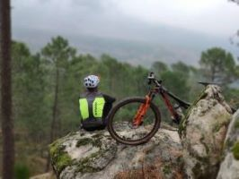

CrossFit

• Tester le bon fonctionnement de l'installation des prestataires.
•Proposer des solutions techniques et prendre des initiatives
permettant d'assurer la continuité de service des clients.
• Réparer des rapports sur des échecs, constater et signaler des litiges.
• Installer et paramétrer les réseaux au sein de l'entreprise.
• Vérifier la sécurité du système.
• Effectuer la maintenance : mises à jour régulières
•Assurer la bonne exécution du chantier, en relation avec le chef de
chantiers et/ou le conducteur de travaux.
• Mise en conformité et sécurité du site.
• Accompagner une équipe de monteurs câbleurs .
• Préparation matérielle des dossiers.
• Pose de la fibre optique , et raccordement.
• Validation réfractométrie avec rapport de mesures,
• Mise à jour des documents de suivi de travaux.
• A rentabilité journalière
• Installation du boitier fibre optique.
• Tests de bon fonctionnement
• Installation et l'assemblage des équipements.
• Contrôle et test des installations.
• Analyse d'une anomalie et le dépannage.